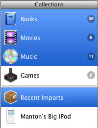
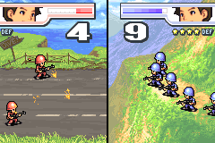

Discovering new podcasts is still an awkward process, despite some great podcast support in newsreaders such as NetNewsWire 2.0. I thought it would be interesting to randomly pick individual podcasts and aggregate their latest posts into a special feed. After a little bit of hacking I came up with Podcast Shuffle. Perhaps the name is too gimmicky, but it’s a fun little feed that may even surprise you.
SXSW: Simplicity, Ta-da, and XFN
Jason Fried has been talking a lot lately about keeping your product simple. His SXSW session on Saturday continued this theme of doing more with less — “constraints encourage creativity.” One example he cites is how Ta-da List’s lack of due dates or responsibility assignment forces people to find a human solution to the problem, often something as simple as appending a date to the to-do item. Later, if patterns emerge in how users are working around true limitations in the software, then that is the time to add an interface and make it a real feature.
Tantek makes a similar point when discussing XFN. Rather than create a complex format that attempted to solve several different problems (some of which may not even exist yet), they simply looked at one thing (blogrolls) and paid particular attention to how users were working around the limitations of a simple list of links. Adding “*” next to people a web site author had met is the same idea as adding a date in the text of a to-do item in the 37signals example. They could then extract the true semantics behind those existing practices into XFN and similar microformats, building on top of XHTML to embrace the way users currently publish for the web.
Year three
It’s now been three years since I started this weblog. Here’s last year’s post, the one a year before that, and the first post. I like that the anniversary date falls around SXSW. It serves as a convenient reminder, and is also a good time to reflect on blogging in general.
Since 2002 I’ve posted 219 times. A small number compared to many blogs, but sufficient for me. When I first started this blog with Radio Userland, it couldn’t separate each post into its own HTML file unless each post fell on separate days. I found the use of anchors annoying, so I limited myself to posting once a day. With Movable Type that limitation was gone, but I still don’t post more than once a day, and usually less often than that. With so many bloggers to read, some of my favorites are those who only post once a week, but when they do it’s their best stuff.
Elements 7
If you’ve been wondering what all the podcast hype is about, Ryan’s latest Elements episode has a few of the things that make podcasts great: music, interviews, uniquely non-mainstream, and told with a fresh perspective that you can only get from listening to normal people talk. Another thing I like about Elements — and this applies to both weblogs and podcasts — is the consistent length and post frequency. It’s nice to look forward to an under-30-minute audio show synced to your iPod every Sunday.
This weekend I spent some time (not much) on a little podcast-related service that I’ll unveil this week. (And by “unveil” I mean upload a couple files and call it shipped.) I’ve also got a podcast in the works, although (contrary to what I said above) it will not be a regular fixture of this site. Instead it will be more like the occasional photo album — a supplement to the text and delivered in a way that fits the content.
Staple!
For comics fans in Texas, the Staple! Expo will be held in Austin this Saturday. The Austin Chronicle has a story on it. Congratulations to Chris Nicholas for organizing the event since mid-2004. It should be a fun time.
John Rubio did a fantastic job on the logo, and I tweaked the web site design and handled the HTML and programming maintenance. The news weblog in particular seemed to work out very well, because it allowed Chris to keep the information on the web site current.
I’ve discussed artist-driven businesses before on this site, especially as it relates to the comics and animation industries. I think conferences like Staple have an important role to play in that.
The Ruby end-run
It was fun while it lasted, but PHP’s time may have come and gone. The benefits of PHP in the early days (extremely fast prototyping, embedded in HTML) outweighed the problems (haphazard function naming, poor object-oriented features, and difficulty designing large applications).
PHP Everywhere discusses the move to more robust object-oriented features to compete directly with Java. But some of the old design decisions cannot be swept under the rug. They will remain, leaving an awkward architectural mess.
Web applications are not like traditional applications, where you make an investment in a programming language and source code that makes it all but impossible to change. Web apps are constantly evolving, being rewritten. Or they are obsoleted, shelved. A new domain name is registered and the process starts again.
Enter Ruby on Rails, simple and elegant, drawing the best from the PHP and Java camps. There’s been a lot of criticism from the Java world, but many of those people write code like it was a traditional application anyway — big, complex, connected to legacy systems. They are too invested to switch, and that’s fine.
But the PHP people will switch, easily, and with the apparent momentum of Ruby right now, maybe it’s already happening. Forget the enterprise for now. Rails is a perfect fit for anyone who develops for the web on its own terms, and the people behind apps like Basecamp, 43things, and the upcoming Odeo match that profile.
Update: Dan responds with further exploration of PHP, Java, and Ruby, focusing on why Ruby may not be well suited as an introductory programming language.
Blogging full time, and Cartoon Retro
I hope Kottke’s decision to blog full time without advertising will be a success. He’s got a large reader base. I stopped reading Kottke for most of 2004 but have re-subscribed so I can follow his progress.
The interesting question is whether this approach scales to more than a small number of weblogs. On one hand, I think it does, because even obscure subject matter can find an audience (see Wired’s The Long Tail). But on the other hand, it doesn’t matter. Personal, independent, no-income weblogs will always be important.
I also wondered whether some kind of bloggers cooperative would work. You donate money to the group as a whole and read whatever blogs you like from the list of members. Sort of like contributing to a public radio station, not to a particular show. But I’m not sure that really solves anything, and introduces new problems (bureaucracy, larger initial donation, and paying for weblogs you don’t read). Better to sell directly from creator to consumer.
Last year I subscribed to Shane Glines’ Cartoon Retro experiment. He posts sketches every day, writes about classic art and cartoons he is studying, and occasionally updates his site with full features. The eventual goal will be to produce entire short films, outside the studio system, funded by fans. This is an effort I can fully support. Unlike Kottke or John Gruber, there is no free content from Shane Glines, so that $5 a month goes a long way.
Ajax, Flash, and web standards
We should all be weary of new acronyms lest we promote and give significance to half-baked ideas and fads. But Jesse James Garrett’s Ajax essay is a good read — a concise, high-level look at how JavaScript and XML will upgrade the web browser for fast, dynamic web applications.
Perhaps purposefully, he leaves out the role (if any) of HTML + Flash applications, which Macromedia has been promoting for some time as Rich Internet Applications. It is essentially the same concept, but basing your app on HTML, JavaScript, and XML can solve the major problems of Flash-based apps. Flickr, for example, integrates Flash, not DHTML or Ajax. Don’t misunderstand me, I think Flash-based web apps negate the benefits of the web infrastructure, such as good REST design, but a thorough analysis of asynchronous interactive web apps needs to include Flash at some level.
Jeffrey Veen mentions the significance to Flash apps, and Matthew Haughey covers the KnowNow connection.
Another new Ajax site is the Panic t-shirt store. How many web apps use drag-and-drop at all, let alone so effectively? It’s so simple and elegant, by the time you get to the checkout page and see yet-another-web-form, the change is almost jarring.
The interesting thing will be whether the web standards folks embrace Ajax. You won’t find a spec for XmlHttpRequest at the W3C. Look at the Google source, and you’ll probably see conditions for Firefox or Internet Explorer (Safari isn’t even supported). But Ajax has something going for it: it brings some of the power of native apps to the web, but unlike the old promise of Java or even Flash, it’s zero-install and quick-load. We’ve got to drop this “web standards” holy war and just get on with building next generation apps.
There wasn’t an acronym when embedded images and HTML tables hit the web. The web just changed, seemingly overnight. The same thing will happen with more interactive, less page-driven applications. It’s just the new web.
The Great Scott
 I’m not sure I ever wanted to “grow up” to be a magician, but I was pretty fascinated with it as a kid, and more serious about it than most. I knew the disappearing quarter tricks, had the special card decks, the fancy scarfs and foam balls. Once I went to a magic auction and won a box that could make anything the size of a baby rabbit appear or disappear. And, always, there were the trips to North Austin to a small converted shed in the backyard of a house where The Great Scott sold his magic books and items for eager kids and professional magicians alike.
I’m not sure I ever wanted to “grow up” to be a magician, but I was pretty fascinated with it as a kid, and more serious about it than most. I knew the disappearing quarter tricks, had the special card decks, the fancy scarfs and foam balls. Once I went to a magic auction and won a box that could make anything the size of a baby rabbit appear or disappear. And, always, there were the trips to North Austin to a small converted shed in the backyard of a house where The Great Scott sold his magic books and items for eager kids and professional magicians alike.
He visited my elementary school once. My mom still has the photo of him pouring milk in my ear and pumping it out of the other. Among the right circles, I’d say he was pretty well known. It doesn’t surprise me that he and his wife have a web site.
Fred Donaldson (aka The Great Scott) passed away last week, age 79. That same week, I attended a course by Edward Tufte, who dedicates a chapter of the cloud book to magic (the included image is from it). A day after that, my kids saw another magician perform at the library, and a new generation of magicians was born.
Delicious coding
 Apparently I wasn’t the only person to purchase Delicious Library in the first week of release. They’ve had $250,000 in sales so far. For an app that no one really needs, this is pretty incredible.
And no office space overhead. At O’Reilly’s Mac conference Wil Shipley emphasized a similar point, to cut costs down by selling directly to the customer instead of a boxed product in stores. See Niall Kennedy’s blog post for a link to the MP3.
Wil also likes Cocoa Bindings. From an Apple interview about Cocoa Bindings, he said:
“It makes it really easy for programmers to present data in a way that’s very clear and intuitive to the user. It makes every app look and feel like an iApp.”
I haven’t bought into Bindings yet. I commented on Michael Tsai’s blog about it last month. The funny thing is, the little details in Delicious Library that are so impressive required some significant programming, and shaving a few dozen lines of code that handles sorting in a table view seems to pale in comparison. For example, look at the gradient in this screenshot, and how it works correctly for contiguous or non-contiguous rows. You don’t get that kind of stuff for free.
Back to politics
Thursday is the presidential inauguration, as well as Not One Damn Dime Day. Every year or so you hear about one of these attempts to effect the economy, and of course they usually have no noticeable effect. But you never know — one day one of these virtual protests will catch fire.
“On ‘Not One Damn Dime Day’ those who oppose what is happening in our name in Iraq can speak up with a 24-hour national boycott of all forms of consumer spending.”
Meanwhile, I’m almost at the point where I can listen to the news again. For years I’ve listened to NPR every day, the Sunday talk shows, and frequently Nightline or (when I had cable) The Daily Show at night. But after the election I shut down everything except weblogs. It was just too painful to listen to the media.
Howard Dean is receiving strong support in his run for DNC chair. It shouldn’t surprise anyone who read what I wrote during the Democratic primaries last year that I support him 100%. Hopefully there will be a way to help — it doesn’t have the same grassroots feel as a presidential run because there are so few people who will vote.
Pat Smith’s secret
From the journal of Pat Smith:
“it’s strange to start a new animated film. it seems so far away that i’ll be sitting in a theater watching it. but there’s a big secret about animation: it’s a series of steps, none of which are all that daunting. and sooner or later, there’s no more steps to take, and BANG, your film is done! at least that’s how it works with me.”
I got the same feeling watching the extras on The Return of the King DVDs last week. The task was too enormous for most of the crew to comprehend in it’s entirety.
I guess that’s the way it is with a lot of things. You keep doing it and doing it. Sometimes I catch myself thinking too much — staring at a software interface instead of writing code, or reading art blogs instead of lifting a pencil. Better to just try something, and save the thinking for walks or long drives.
New year gaming
Traci couldn’t find the GameCube games she was looking for (mostly Pikmin), so for Christmas she bought me a Game Boy Advance SP. This was a very unexpected surprise. I hadn’t really used a Game Boy since the original one I owned was stolen/lost a dozen years ago.
To cut right to it, I returned my GameCube system to the store and am now the happy owner of a handful of GBA games, with more on the way (a new Zelda comes out next week).
I’ve also played a fair amount of Halo (1) lately, and did a lot of game research over the holidays, trying to catch up on what the game market looks like today. It all put something in perspective for me: I like 2d games. The lure of Halo 2 and Grand Theft Auto is strong, but I won’t buy an Xbox or PS2 just to play those games.
 The GBA has a number of things going for it:
- Portability. It’s a lot easier to flip open the GBA and play for 10 minutes wherever I am than dedicate time to sit in front of the television.
- Inexpensive games. I bought Advance Wars 2 (see image) for $10 at Best Buy, but $25-30 is common for most new titles.
- RPGs. It turns out RPGs work well on a portable system, and the GBA has a few good ones.
- Good-enough graphics. While there are first-person shooters and 3d racing games, the system is much better at pre-rendered sprites, multiple backgrounds for depth, and that sort of thing.
- Battery. 10-15 hours or more on a charge.
- Hacking. An active developer community, mostly hobbyists. I wrote a test “game” over the holidays.
But, you ask, what about the Nintendo DS? Isn’t the GBA obsolete?
I hope not. The DS is an innovative system, but it’s not a new Game Boy. It’s too expensive, too big, and too different. Nintendo wants to position the DS as a higher-end portable to go head-to-head with the Playstation Portable, but new GBA games will still be released over the next year or two. We are also seeing new GBA add-on gadgets, such as the wireless adapter and upcoming movie player. Some people speculate that a real Game Boy to replace the SP may come out in 2006.
Joystiq has some good points about the DS and PSP:
“The fact is, Nintendo just needed a product to head off Sony’s entry into the portable market. They knew Sony’s attack was inevitable and they planned well for it. They know that, as long as the DS competes with the PSP, the GBA can continue to be the money-maker it is. The high-end DS and PSP can disappear for all Nintendo cares. They’ll still have their little gem.”
The Xbox and PS2 seem to dominate the press, so it surprised me that the GBA was the best-selling game system in North America in 2004, with good holiday sales despite the Nintendo DS introduction.
Here’s what Retrogaming has to say:
“However, now with the advent of the Nintendo DS, I’m a bit worried that nobody will continue making quality 2D games for the precious system for very long. Even Nintendo themselves have already put Advance Wars 3 out on the DS. I understand they want some good launch titles for the system to fend off the PSP, but I’m still worried.”
The biggest risk to the GBA is that developers will focus their effort on DS-only games. But for now, I want to play some fun games again, and the GBA accomplishes that quite nicely.
The Incredibles DVD
Last week I received The Incredibles DVD screener in the mail through my membership in ASIFA-Hollywood, and Saturday a bound copy of the screenplay arrived. I’ll keep the screenplay on my shelf next to the rest of the Pixar books, but I ended up giving the DVD away as a present. I just thought of how excited I would be if someone gave one to me, even opened, and I’ve probably watched it enough already this week.
Okay, I haven’t watched it enough. In fact I’ve only begun to study the film in detail. There’s some great acting in there and it helps to watch in slow-motion. As an animator, how cool would it be to hit pause in a movie theater, then rewind and flip through frames of a great scene? Having the DVD for something that just came out in the theater sort of feels like that.
Google and the great apps to come
Google Desktop Search is a neat app. The integration of local and global results is brilliant. But it’s not the future of desktop search.
David Galbraith said something interesting in a post titled “Google lock in”:
“Whatever Microsoft do, Google have shown the way forward, their desktop search makes your desktop just one more search tab. It brings your desktop to the web rather than the web to the desktop and this seems like a much more logical UI experience.”
Maybe. I’m not sure I totally disagree with that point, given Google’s dominance of web search. But one thing I do believe is that a native application user interface always has the potential to be better than a web-based one. If you buy into that opinion, it means that we aren’t done. In fact, it means Google’s monopoly as it currently exists is vulnerable.
Let’s take a step back. In general, there were three things that allowed web-based apps to win out in the late 90s:
- Ease of development. Building interfaces in HTML is fast and very flexible.
- Speed and storage. Fast databases, lots of memory, and load-balanced web servers.
- Cross-platform. New companies put their resources on web-based apps instead of traditional ones. (Also see Joel Spolsky’s “How Microsoft Lost the API War”.)
Native apps can’t compete on those points. Instead, they can win with thoughtful interfaces constructed to fit on the platform alongside other native apps. As an example, lately I’ve been using Ranchero Software’s MarsEdit for weblog writing, and it’s a huge step forward from the Movable Type web interface. And that’s not because the Movable Type interface is particularly bad (it’s actually slightly above average). It’s just that a web-based app, even running locally, is a black box that cannot play nice with the rest of the system.
Tim O’Reilly likes to talk about how little apps such as Apple’s Address Book and iChat provide base features that other apps can build upon (a Friendster-like social app should hook into your buddy list). That kind of integration is difficult with web-based apps because user data tends to be stored locally, and if published to the web, it could be to one of any number of services. Instead of two platforms (Mac OS X and Windows), you may have dozens of individual web-based platforms (Yahoo!, MSN, AOL, Friendster, Mapquest, Fandango, and more). Those services are designed to take your data and keep it; there is not likely to be a standard API to share information between them anytime soon.
The potential of a native app is even stronger in this era of web services. Web developers are going back to their roots, building REST design into their applications from the ground app instead of exposing complex SOAP calls on the top as an afterthought. A recent example of this is Del.icio.us, it’s API, and the still-evolving Cocoalicious client, which already has hooks from PulpFiction and NetNewsWire. Another example is 1001, a Flickr client.
To bring this back to search, Google rose to the top because they were fast, accurate, and valued the user enough to know when to get out of his or her way. Google is still all of those things, because they had unique leadership that recognized those strengths from the very beginning.
So why, especially given Google’s strong brand, are there still new competitors investing in search? Because there is room for improvement. Users will move to new applications for the same reason they moved to the iPod: it was that much better. Snap adds sorting, for example. Teoma added a refine feature.
But unfortunately for the competition, they are trying to do things that are simply best left for outside the browser. Gmail was widely acknowledged as a breakthrough app that could hold it’s own against native email apps, but that’s only because native email apps are so notoriously bad. With the limited number of emails most people have, the “speed and storage” advantage of most web applications was not a critical factor.
Enter Apple’s spotlight technology. It integrates with the Finder or any application that wants to play. It’s extensible by third-party developers to accommodate file types that Apple does not support out of the box (this was a quick complaint from Dave Winer about Google Desktop Search). It has a fast, polished user interface that is built around finding local files and dealing with their metadata in an appropriate way. It’s just better.
This won’t be the first time Apple has stepped into search and metadata (remember R.V. Guha’s MCF and the HotSauce fly-through browser? Remember Sherlock?). But it will be the first time it’s really clicked in the UI.
As Wes Felter said: “If I just had the Web browser UI I would feel totally crippled.”
And at some level, Google gets this fully. Take for example their Picasa photo application. Or the Google Deskbar.
Don park sees the problem in terms of metadata and less about user interface:
“The core problem here is that search engines like Google throws everything into one pot. For web search, all the web pages on the Net gets thrown into that pot. Thankfully, hyperlink-based pageranking pulls the good stuff to surface with minimal hassle. With desktop search, all of your documents gets thrown into the pot without an equivalent of page ranking to measure relevance. IMHO, there aren’t enough metadata on the desktop to achieve the same level of utility Google web search offers.”
More to the point, Dan Wood commented on the accidental integration between Watson and Delicious Library:
“In fact, I recently read that Watson’s Amazon.com tool integrates quite nicely with Delicious Library via drag and drop. A lot of this has to do with the support we had put into Watson for integrating with other applications, including your browser and Spring. If Delicious Library hooks up with PriceGrabber, we may find similar compatibility between the two applications as well, either through luck or through design.”
Two simple things made this possible: Apple providing a recommendation for how drag-and-drop of URLs should work, and the REST-style URLs of a traditional web app like Amazon.
A final conclusion, to a post that’s already too long. Newsfire is a lightweight news reader with a clean interface that is a hybrid of native controls and HTML, backed by useful metadata (RSS). And Delicious Library is more than a book catalog app, it’s an Amazon UI stripped to just the essentials. Both these applications are at the peak of a shift that has been a couple years in the making — the convergence of web services, post-iTunes UI design, and system services such as Address Book, drag-and-drop, and metadata. Future apps will be judged by these standards.
Tiger Tech Talk
I didn’t know exactly what to expect when I signed up for Apple’s Tiger Tech Talk. It looked like a sort of mini WWDC event, and since the first stop on their tour was here in Austin, it was a no-brainer to sign up. But would it be just a marketing-filled event with little real substance? Or maybe just rehashing of WWDC slides but given by less prominent developers?
I’m happy to report that it was a high-quality event. Apple was represented by such familiar faces as Xavier Legros, John Geleynse, Travis Brown, and George Warner. Extra perks included free continental breakfast (I should have shown up earlier), lunch, dinner appetizers, and drinks. The Tiger compatibility lab had about 10 G5s.
Most of the sessions were essentially repeats from WWDC, but the informal nature of the setting allowed for good questions. Apple said about 120 people registered, and there were four concurrent sessions after the overview talks.
Speaking of Mac developers, Panic describes the history of their Audion product.
The Incredibles

There have been some interviews with Brad Bird and the other Pixar folks recently. The Luxo blog does a good job of linking to them.
After almost winning
See that little blue county in the expanse of red in the image on the right? That’s where I live.
Back in January, I said: “It’s about bringing more people into the process. But to do that right, we need a candidate who can speak passionately to the issues and inspire voters.” Kerry ran a good campaign, but I can’t help thinking that something was missing in both the man and the message.
Kos is calling on Dean to replace McAuliffe as head of the DNC. It’s time for the Democratic party to get back on the offensive. The last two years have been about building the groundwork for future wins — the internet infrastructure, the radio, the organization. It’s not there yet but it will be in 2006. All that’s left is to pick quality opposition candidates and to absolutely stop letting Republican’s frame every issue on their own terms.
One of the things that really bugs me is when Republican candidates run unopposed. This year, thanks to redistricting, our congressional district went from being all of Austin to a tiny strip of rural counties stretching from my neighborhood to Houston. The district was designed for a Republican win, and the Democratic party didn’t bother to challenge it until Lorenzo Sadun signed up as a write-in candidate.
There was no chance to win as a write-in, but he received 12% of the vote! 11000 people took the time to spell his name correctly because they wanted to send a message. And in the Houston suburbs, Richard Morrison came within 10 points of beating Tom DeLay, the closest contest DeLay has ever faced.
The truth is, we almost won. We almost unseated a war-time president who had 90% approval ratings after 9/11. We almost beat a party that used fear (terrorism and gay marriage) to get people into the voting booth.
We almost won, and all the hard work of the last 18 months will pay off big in two short years.
What just happened?
Based on the exit poll numbers and the supposedly record turnout, I fully expected that we’d know within a couple hours after polls closed that Kerry was the decisive winner. I was bewildered when Florida, Ohio, Pennsylvania, and Wisconsin still weren’t called, so I went to bed.
I woke up off and on in the middle of the night, dreaming that I was browsing news web sites. At 5am I couldn’t stand it any longer and got out of bed for good, and now I’ve been deciphering what happened since last night.
The turnout was up, but even the current numbers seem low considering all the people who waited several hours in line to vote. And where was the young vote? I wasn’t the only one to predict they’d make the difference. Is the Republican get-out-the-vote effort just that much better?
Once again, the networks (specifically NBC and Fox) called states too soon. By giving Ohio to Bush, they were left in the sticky 269 situation, not daring to give any more states (like Nevada) to him lest they completely undermine the vote counting process. The networks promised more transparency in how they project a winner, but I didn’t see it.
Election day
The daylight savings time switch has helped me get up earlier, so I easily made it to my voting location by 7am this morning. There was already a line of people (perhaps 50) stretching outside. It was cold, from the front that came in yesterday, but it didn’t seem to bother anyone too much. No one gave up and left during the 45 minutes I was there.
I’m optimistic.